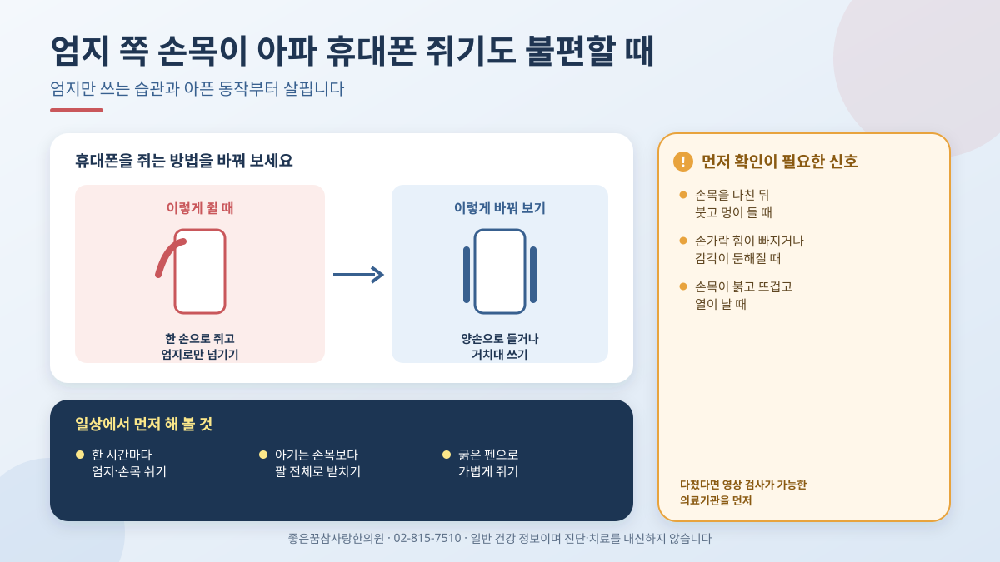

이종호 한의사 감수좋은꿈참사랑한의원 대표원장 (한의사 면허번호 19769)발행 2026-11-23 · 수정 2026-11-25
이 글의 차례
엄지 쪽 손목이 아파 휴대폰을 쥐기도 불편하다면, 엄지를 어떻게 얼마나 쓰는지와 어떤 동작에서 아픈지를 먼저 살피고 필요하면 초음파로 힘줄 부위를 확인합니다. 아기를 안는 부모, 하루 종일 마우스와 휴대폰을 쓰는 직장인, 노량진 학원가에서 오래 필기하는 수험생에게서 자주 듣는 이야기입니다. 쓰는 습관을 바꾸는 것이 진료만큼 중요해 함께 이야기합니다.
엄지 쪽 손목 통증은 병뚜껑을 딸 때, 행주를 짤 때, 아기를 들어 올릴 때처럼 엄지를 벌린 채 손목을 비트는 순간 찌릿하게 오는 경우가 많습니다. 처음에는 쓸 때만 시큰하다가 쉬어도 욱신거리는 쪽으로 넘어가기도 해서, 언제부터 어떤 동작에서 아팠는지 순서대로 짚어 보면 무엇부터 줄일지 보입니다.
왜 이런 불편이 생길 수 있나요
- 엄지를 펴고 벌리는 힘줄은 손목 엄지 쪽의 좁은 통로를 지나는데, 같은 동작이 반복되면 이 통로에서 힘줄이 쓸리며 예민해질 수 있습니다.
- 휴대폰을 한 손으로 쥐고 엄지로만 화면을 넘기는 습관은 이 부위에 부담을 몰리게 합니다.
- 출산 뒤에는 아기를 손목으로 받쳐 안는 일이 많아 비슷한 부위가 아프다는 분이 많습니다.
- 손목을 새끼손가락 쪽으로 꺾은 채 힘을 주는 작업도 부담을 더할 수 있습니다.
- 손목 엄지 쪽은 살이 얇고 뼈와 가까워, 힘줄을 감싼 막이 조금만 두꺼워져도 불편이 크게 느껴질 수 있습니다.
먼저 이렇게 여쭙니다
- 엄지를 굽히고 손목을 새끼손가락 쪽으로 꺾으면 아픈가요?
- 휴대폰, 마우스, 필기 중 무엇을 가장 오래 하시나요?
- 아기를 안거나 무거운 것을 드는 일이 많나요?
- 손가락 저림이 함께 있나요?
- 아침과 저녁 중 언제 더 불편한가요?
일상에서 먼저 해 볼 수 있는 것
- 휴대폰은 양손으로 들거나 거치대를 쓰고 엄지만 쓰지 않기
- 한 시간마다 손목과 엄지를 가볍게 쉬기
- 아기를 안을 때 손목보다 팔 전체와 몸으로 받치기
- 펜은 굵은 것으로 바꾸고 너무 꽉 쥐지 않기
- 병뚜껑 따기, 행주 짜기처럼 손목을 비트는 일은 반대 손이나 도구로 나눠 하기
- 통증이 심한 날은 엄지까지 감싸는 손목 보호대를 잠시 쓰기
상황별 예시
- 예를 들어 출산 뒤 아기를 안고 수유하는 시간이 길어지며 손목 엄지 쪽이 시큰한 경우, 손목을 꺾어 아기 머리를 받치던 자세를 수유 쿠션으로 높이를 맞추고 팔뚝 전체로 받치는 자세로 바꿔 봅니다. 수유 중이라는 점은 진료 전에 먼저 알려 주세요.
- 예를 들어 하루 종일 마우스를 쓰고 퇴근길 지하철에서도 한 손으로 휴대폰을 쥐고 엄지로 화면을 넘기는 직장인이라면, 출퇴근길만이라도 양손으로 들고 긴 글은 음성 입력으로 바꿔 엄지에 몰리는 시간을 먼저 줄여 봅니다.
- 예를 들어 노량진 학원가에서 하루 대부분을 필기로 보내는 수험생이라면, 50분 쓰고 5분 손을 펴서 쉬는 순서를 정하고 펜을 굵은 것으로 바꿔 꽉 쥐는 힘을 줄여 봅니다.
스스로 점검해 보세요
- 엄지를 펴거나 벌릴 때 손목 엄지 쪽이 시큰하다.
- 병뚜껑 따기, 행주 짜기, 문고리 돌리기를 할 때 손목 엄지 쪽이 찌릿하다.
- 손목 엄지 쪽이 도톰하게 부어 보이거나 누르면 아프다.
- 엄지를 움직일 때 삐걱거리거나 걸리는 느낌이 있다.
- 한 손으로 휴대폰을 쥐고 엄지로 화면을 넘기는 시간이 하루 중 가장 길다.
- 출산 뒤, 또는 손을 많이 쓰는 일을 새로 시작한 뒤에 아프기 시작했다.
한의원에서 함께 살필 수 있는 경우
- 엄지 쪽 손목 통증이 이어지는 경우 쓰는 습관과 아픈 동작을 함께 살핍니다.
- 필요하다고 판단되면 초음파로 힘줄 부위를 확인하고 체외충격파를 검토합니다.
- 목과 어깨의 긴장이 함께 있는 경우 침을 이어서 살핍니다.
첫 방문은 이렇게 진행됩니다
- 이야기 듣기: 하루 동안 손을 어떻게 쓰는지, 휴대폰·마우스·필기·아기 안기에 쓰는 시간과 통증이 시작된 시기를 먼저 충분히 듣습니다.
- 맥 짚기와 혀·배 살피기: 손목만 아파도 맥부터 짚어 몸 전체 상태를 살피고, 필요하다고 판단될 때 혀와 배를 더해 봅니다. 출산 뒤라면 잠과 회복 상태도 함께 여쭙습니다.
- 움직여 보고 확인하기: 엄지와 손목을 움직여 보며 아픈 지점을 찾고, 필요하다고 판단될 때 초음파로 손목 엄지 쪽 힘줄과 이를 감싼 막의 두께, 주변 붓기를 화면으로 함께 보며 설명드립니다.
- 방향 정하기: 체외충격파, 침, 약침 가운데 상태에 맞는 방법을 정합니다. 체외충격파는 세게 할수록 좋은 것이 아니어서, 살이 얇은 손목 엄지 쪽은 낮은 강도에서 시작해 말씀을 들으며 조절합니다.
- 귀가 전과 다음 방문: 집과 일터에서 바꿔 볼 손 쓰는 습관을 정리해 드리고, 다시 오시면 지난번 아팠던 동작을 다시 해 보며 그사이 어땠는지 이어서 여쭙습니다.
얼마나 지켜보고 언제 상담할까요
- 휴대폰 양손 쓰기, 한 시간마다 쉬기, 아기 안는 자세 바꾸기를 1~2주 이어 가며 아픈 동작의 불편을 0~10점으로 적어 봅니다.
- 2주가 지나도 점수가 그대로이거나, 아픈 범위가 넓어지거나, 쉬고 있을 때나 밤에도 욱신거리면 상담을 받아 보세요.
- 손목 엄지 쪽이 눈에 띄게 붓거나 엄지를 움직일 때 걸리는 느낌이 생기면 2주를 기다리지 말고 확인합니다.
- 아래 증상이 있으면 지켜보지 말고 먼저 확인합니다.
이렇게 기록해 오시면 상담이 쉬워집니다
- 하루 휴대폰 사용 시간과 주로 쓰는 손
- 아기 안기, 필기, 마우스처럼 손을 많이 쓰는 일과 시간
- 통증이 시작된 시기와 그 무렵 달라진 생활
- 붓기나 '딸깍' 걸리는 느낌이 있었는지
이런 증상은 먼저 확인이 필요합니다
- 손목을 다친 뒤 붓고 멍이 드는 경우
- 넘어지며 손을 짚은 뒤 엄지 뿌리 아래 손목의 오목한 곳을 누르면 아픈 경우
- 손가락에 힘이 빠지거나 감각이 둔해지는 경우
- 손목이 붉고 뜨거우며 열이 나는 경우
체외충격파는 진찰 후 필요하다고 판단될 때만 하며, 횟수와 간격, 비용, 보험 적용 여부는 방문 전 전화(02-815-7510)로 확인해 주세요. 넘어진 뒤 손목이 심하게 붓거나 모양이 달라 보이면 정형외과나 응급실에서 뼈부터 확인하세요. 복용 중인 약은 처방한 의사와 상의 없이 줄이거나 끊지 않습니다.
관련 글
- 출산 뒤 아기를 안다가 손목과 손가락이 아플 때는 어떻게 하나요?
- 필기를 많이 하는 수험생의 손목과 엄지가 시큰할 때는 어떻게 하나요?
- 손가락을 굽혔다 펼 때 걸리는 느낌이 있으면 초음파로 무엇을 보나요?

여쭙는 것
- 엄지를 굽히고 손목을 새끼손가락 쪽으로 꺾으면 아픈가요?
- 휴대폰, 마우스, 필기 중 무엇을 가장 오래 하시나요?
- 아기를 안거나 무거운 것을 드는 일이 많나요?
생활에서 해 볼 것
- 휴대폰은 양손으로 들거나 거치대를 쓰고 엄지만 쓰지 않기
- 한 시간마다 손목과 엄지를 가볍게 쉬기
- 아기를 안을 때 손목보다 팔 전체와 몸으로 받치기
한의원에서 함께 살필 것
- 엄지 쪽 손목 통증이 이어지는 경우 쓰는 습관과 아픈 동작을 함께 살핍니다.
- 필요하다고 판단되면 초음파로 힘줄 부위를 확인하고 체외충격파를 검토합니다.
- 목과 어깨의 긴장이 함께 있는 경우 침을 이어서 살핍니다.
먼저 확인이 필요한 신호
- 손목을 다친 뒤 붓고 멍이 드는 경우
- 넘어지며 손을 짚은 뒤 엄지 뿌리 아래 손목의 오목한 곳을 누르면 아픈 경우
- 손가락에 힘이 빠지거나 감각이 둔해지는 경우
한눈에 보는 표
| 구분 | 핵심 |
|---|---|
| 여쭙는 것 | 엄지를 굽히고 손목을 새끼손가락 쪽으로 꺾으면 아픈가요? 휴대폰, 마우스, 필기 중 무엇을 가장 오래 하시나요? |
| 생활에서 해 볼 것 | 휴대폰은 양손으로 들거나 거치대를 쓰고 엄지만 쓰지 않기 한 시간마다 손목과 엄지를 가볍게 쉬기 |
| 한의원에서 함께 살필 것 | 엄지 쪽 손목 통증이 이어지는 경우 쓰는 습관과 아픈 동작을 함께 살핍니다. 필요하다고 판단되면 초음파로 힘줄 부위를 확인하고 체외충격파를 검토합니다. |
| 먼저 확인이 필요한 신호 | 손목을 다친 뒤 붓고 멍이 드는 경우 넘어지며 손을 짚은 뒤 엄지 뿌리 아래 손목의 오목한 곳을 누르면 아픈 경우 |
자주 묻는 질문
손목 보호대를 계속 차도 되나요?
통증이 심할 때 잠시 쓰는 것은 괜찮지만, 오래 쓰는 것은 진료 때 함께 이야기해 보세요.
출산 후 손목 통증도 같은가요?
비슷한 부위가 아플 수 있어 아기 안는 자세와 수유 자세를 함께 살핍니다.
수유 중인데 진료를 받을 수 있나요?
네. 수유 중이라는 것을 먼저 알려 주시면 그에 맞춰 방법을 정합니다.
체외충격파는 세게 받을수록 빨리 나아지나요?
그렇지 않습니다. 손목 엄지 쪽은 살이 얇고 뼈와 가까워 같은 세기도 더 크게 느껴질 수 있습니다. 낮은 강도에서 시작해 받는 동안 말씀을 들으며 조절하니, 참기 어려우면 바로 말씀해 주세요.
휴대폰을 아예 쓰지 말아야 하나요?
끊기는 어렵기 때문에 쥐는 방식부터 바꿔 보길 권합니다. 양손으로 들거나 거치대에 세워 두고, 긴 글은 음성 입력이나 컴퓨터로 옮겨 쓰면 엄지에 몰리는 부담을 줄일 수 있습니다.
진료 시간은 어떻게 되나요?
좋은꿈참사랑한의원은 평일 09:30~20:00(점심 13:00~14:00), 토·일·공휴일 09:30~15:00에 진료합니다.
좋은꿈참사랑한의원은 재진 때 지난번 이야기부터 이어서 여쭙니다. 진료시간과 예약은 오시는 길에서 확인하세요.
어디서 상담받을 수 있나요?
좋은꿈참사랑한의원은 서울 동작구 만양로2길 2 신성빌딩 3층·5층(서울 동작구 상도동, 7호선 상도역 3번 출구 근처)에 있습니다. 한의사 3명(이종호 대표원장, 조영기 수석진료원장, 정원영 진료원장)이 진료합니다. 진료시간은 평일 09:30~20:00(점심 13:00~14:00), 토·일·공휴일 09:30~15:00이며, 방문 전 전화로 확인을 권합니다. 예약은 네이버 예약, 카카오톡 상담, 전화 02-815-7510로 받습니다.
이 글은 일반적인 건강 정보이며 개인의 진단이나 치료를 대신하지 않습니다. 증상이 있거나 복용 중인 약이 있다면 진료를 통해 확인하세요. 치료 효과는 개인마다 다를 수 있습니다.
작성 기준: 일반적으로 알려져 있는 건강 정보를 참고해 정리했습니다(대표원장 감수). 증상 기록은 1~2주 동안 하루 1회, 비슷한 시간에 적어 오시면 지난 상태와 비교하기 쉽습니다.